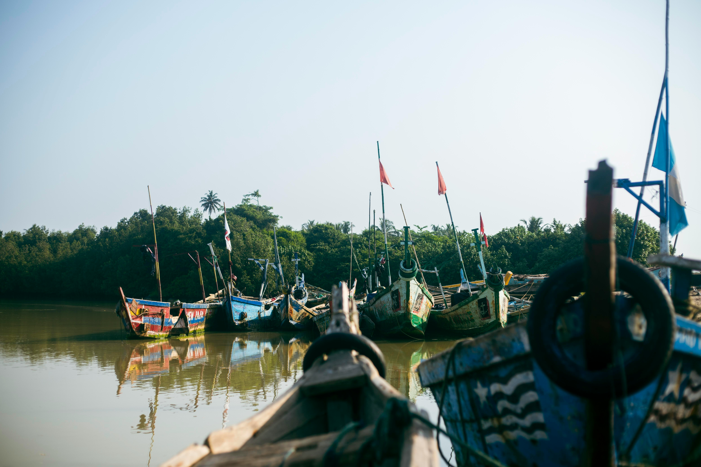
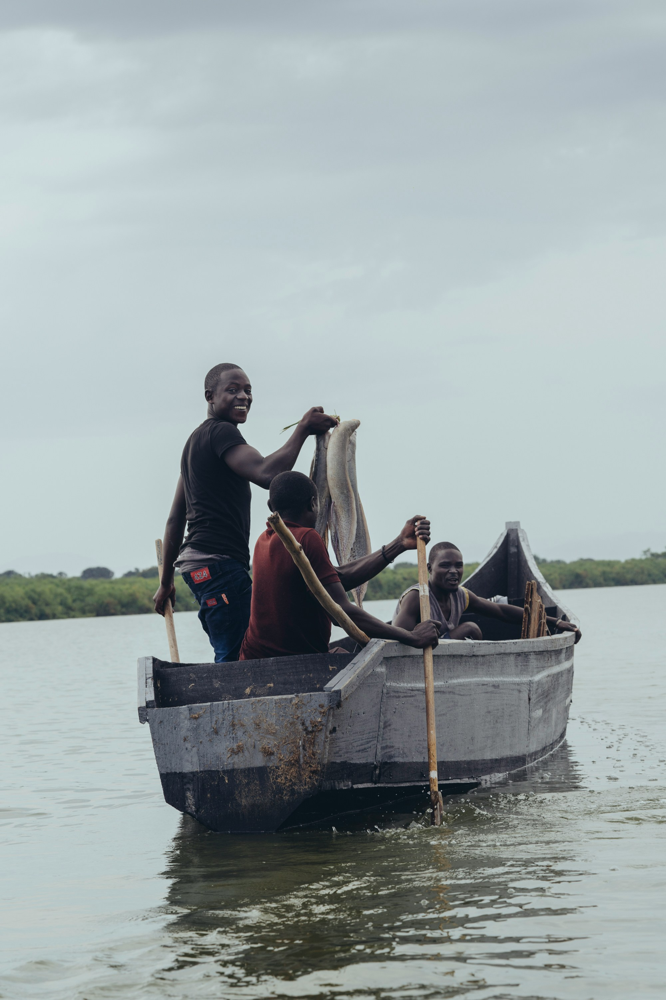
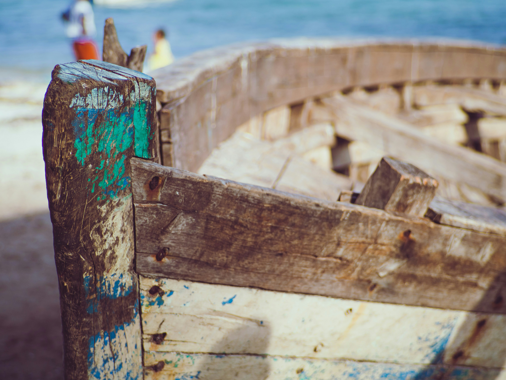
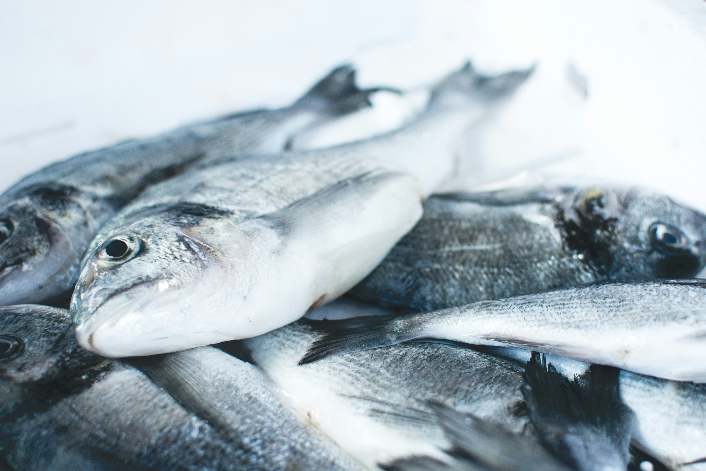

01
Pêche durable
Des techniques qui respectent la ressource et les habitats marins — pour que la mer nourrisse encore demain.
On travaille main dans la main avec les pêcheurs artisanaux — pour une mer vivante, et des revenus qui durent.

ECO-LIEUTIQUE accompagne les pêcheurs artisanaux : on équipe, on forme, on valorise le poisson — et on protège les écosystèmes dont dépendent ces communautés.
Notre modèle repose sur un partenariat direct : bateaux, matériel et conservation d'un côté ; un approvisionnement durable et équitable de l'autre.
Nous fournissons aux pêcheurs des bateaux, des équipements de pêche, du matériel de sécurité et des solutions de conservation. En contrepartie, les pêcheurs partenaires s'engagent à nous approvisionner selon les termes des contrats établis.
Chaque pêcheur partenaire bénéficie d'une formation continue sur les bonnes pratiques de pêche, la protection des écosystèmes marins et la gestion durable des ressources.
Éco — l'écologie et le développement durable.
Halieutique — l'exploitation des ressources aquatiques et marines.
Prospérer économiquement, sans casser l'équilibre de la mer.
Du bateau à l'assiette — voici ce qu'on fait, concrètement.
Les communautés de pêcheurs font face à des difficultés qui réduisent leurs revenus et menacent la durabilité du secteur — alors même que la demande en poisson ne cesse d'augmenter.

Le quotidien de la pêche artisanale : du matériel fatigué, peu de moyens, une mer qui change.
ECO-LIEUTIQUE répond simultanément à deux enjeux majeurs :
Financement, équipements et accompagnement pour améliorer durablement leurs revenus.
Préserver les ressources marines et les écosystèmes pour les générations futures.

Devenir la référence de la pêche durable et de la gestion responsable des ressources halieutiques en Haïti et dans la Caraïbe.
Soutenir les communautés côtières : accompagner les pêcheurs, valoriser le poisson, et préserver les écosystèmes marins.
Préserver les ressources marines pour les générations futures.
Respecter les principes environnementaux et sociaux à chaque étape.
Transparence dans toutes nos transactions et relations partenariales.
Des solutions modernes adaptées à la pêche artisanale.
Des partenariats durables et équitables avec les pêcheurs.
Six situations courtes — scénarios, vrai/faux et une association. Pas un examen : juste pour voir comment on pense la mer, les pêcheurs et le poisson.
Vous êtes pêcheur, institution ou client ? Écrivez-nous. On vous répondra pour voir comment avancer ensemble.
Envoyer un email